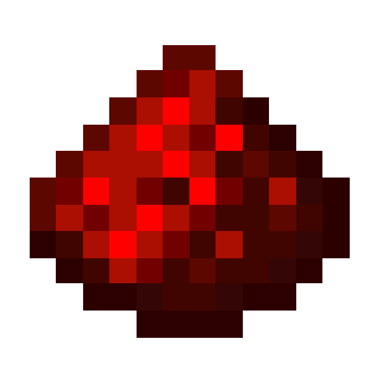

Создание логических схем из редстоуна

Наверно, каждый игрок в Minecraft использовал те или иные редстоун-механизмы (хотя бы для автоматических дверей или ферм). Но далеко не все знают, что с помощью редстоуна (справа) можно создать внутриигровые аналоги реальных логических элементов, которые широко применяются в электронике.
Редстоун может находиться в 2-х состояниях: "активно" и "неактивно". Этим он похож на элементы цифровой электроники. Теоретически, в Майнкрафте можно построить любое устройство, работающее на двоичном коде.
На этом сайте вы сможете узнать о том, как создавать простейшие логические элементы, а также более сложные элементы на их основе. Для этого выберите в меню навигации (вверху) пункт "Логические элементы" или нажмите здесь.
Еще на сайте представлена информация о схемах, известных как "тик-так механизмы". Эти схемы являются аналогами тактовых генераторов. Чтобы почитать о них, выберите в меню навигации "Тактовые генераторы" или нажмите здесь.